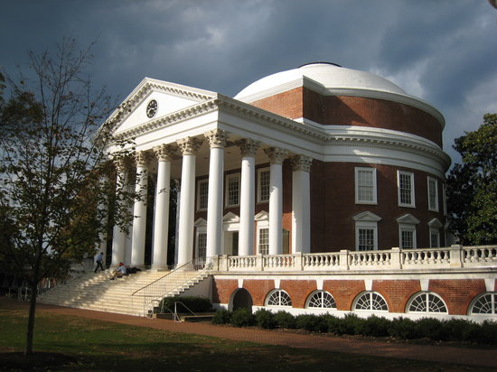
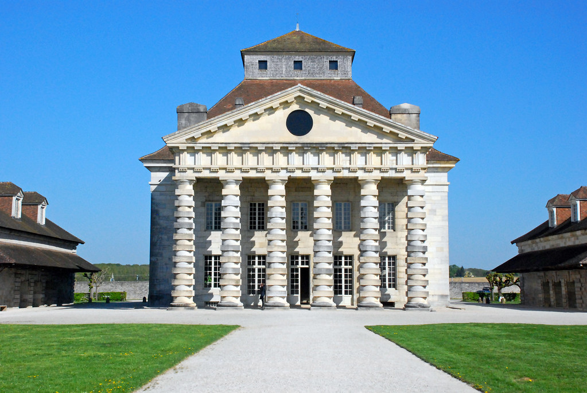
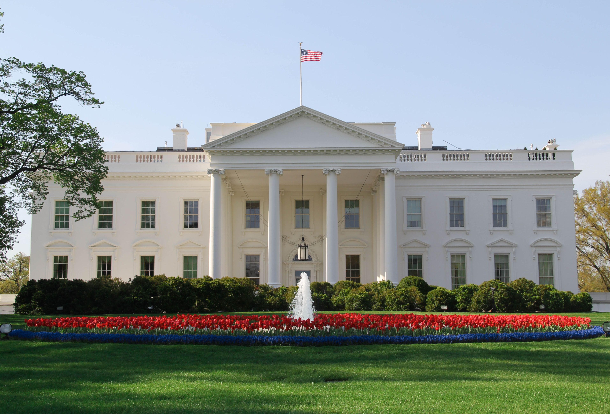

Neo-Classical is further down the page
PrairieNeo-Classical Architecture is a type of architecture that is combines greek and roman architecture.
This type of architecture came from a renewed interest in anceint Greek and Roman literature,art, and design.
Neo-Classical architecture consists of tall columns which usually descend from a triangular pediment, and usually has a domed roof.
Examples of Neo-Classical architecture include:
Thomas Jefferson's,The Rotunda
Arc-Et-Senans's, Royal Saltworks
James Hoban's, White House